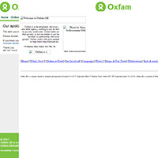
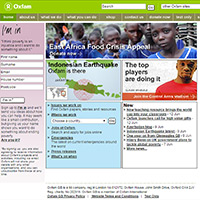
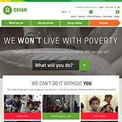
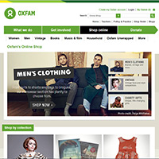
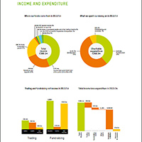
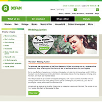
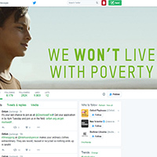
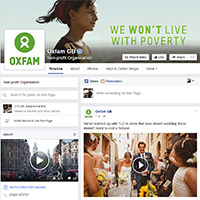
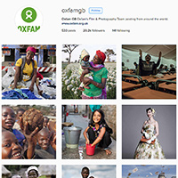
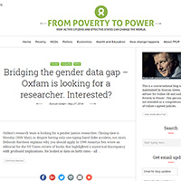

Online Presence
Oxfam is always seeking new and innovative ways to advertise their advocacy and educational campaigns, their development work, and their humanitarian and disaster response as quickly and as broadly as possible.
Oxfam Website, 1996
In 1996 Oxfam embraced the growing online market and launched Oxfam Online.
"
data-desc="Oxfam homepage retrieved from Archive.org" />
Oxfam Website, 2006
Whilst Oxfam Online has gone through many aesthetical changes its core purpose has remained the same - to serve as a central ‘Information Hub’. From here, it can disseminate materials, advertise upcoming campaigns and raise awareness to an ever-growing digitally-savvy audience.
"
data-desc="Oxfam Website, 2006" />
Oxfam Website, 2016
Now, everyone with internet access can view Oxfam’s work, educational and published materials, and find out information about how they can help. Oxfam and its messages are now reaching people around the world, twenty-four hours a day, raising awareness, educating readers, and advertising issues and the work it does.
"
data-desc="Oxfam Website, 2016" />
Oxfam Online Shop
Continuing to build upon its digital presence and fundraising efforts, Oxfam took its branding and merchandise to the web and launched its online shop in 2001.
"
data-desc="Oxfam Online Shop" />
Income Graphs
Oxfam trading has always been profitable contributing 22% of the total income for 20134/15, totalling £87 million and, whilst the high-street shops’ incomes are slowing, online income continued to grow by 75%.
"
data-desc="Income Graphs" />
Wedding Dress Auction
Oxfam Online differs from its high-street equivalent in that it only sells unique second hand items and hosts unique auctions to maintain a competitive edge. These sales are highly publicised events, often containing valuable items such as wedding dresses or donations from renowned celebrities: they promote the shop and encourage more traffic to Oxfam’s site.
"
data-desc="Wedding Dress Auction" />
Oxfam Unwrapped
Oxfam has also embraced the world of Social Media and is increasingly active therein, utilising it as an extension of the primary website to advertise their efforts ever wider.
"
data-desc="Oxfam Unwrapped" />
Twitter
Utilising a mix of positive and provocative - but not ghastly - imagery, Oxfam presents development success stories, information on campaigns, and merchandising advertisements, which tie into larger blog posts and their main website.
"
data-desc="Twitter" />
Facebook
What makes Oxfam‘s Social Media presence so successful and a valuable advertising tool is their strategy towards its use. Each platform has brief and frequent factual posts tailored to each platform’s strength, and Oxfam are quick to respond and encourage topical debates on the issues they are a part of.
"
data-desc="Facebook" />
Instagram
Oxfam’s social media pages are bitesized adverts that feed into more detailed information present on their main website and through their publications: a well-suited advertising means, fitting for an age where digital information and access is growing continuously.
"
data-desc="Instagram" />
Blog
Oxfam presents development success stories, information on campaigns, and merchandising advertisements, which tie into larger blog posts.
"
data-desc="Blog" />